-
Hey, my name is Chad!
I am currently an Interaction Designer at GE in San Ramon, CA. I chose the Wait Staff Review prompt because I am excited about this problem space and familiar with the pain points of being a server.
-
Time to look around and see what's out there.
I decided to begin by searching the internet for any resources I could find on server reviews and restaurant management applications. I found that more than a few current solutions already existed as well as a rather entertaining blog with testimonials of current server's pain points.
-
I created a survey to share with my friends and previous coworkers to collect quantitative and qualitative information. Meanwhile I interviewed a previous coworker whom I knew had switched between multiple food service jobs in the past to hear her perspective.
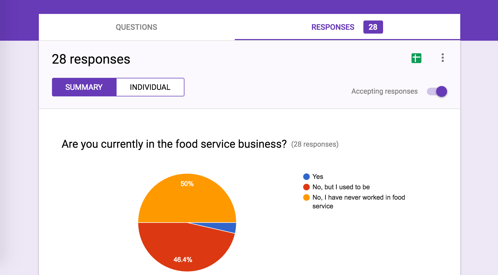 -
What I found.
After reviewing my brief research I took a look at the prompt again and something puzzled me. What is the problem that we are trying to solve and why is it a problem in the first place?
-
When reviewing the survey results and interview notes I noticed something interesting:
- On average, those who have worked in food service were less likely to leave negative ratings due to fear their server would confront them, compared to their counterparts with no food service experience.
- On average, those who have worked in food service were more likely to leave positive feedback than their counterparts with no food service experience.
-
Upon diving deeper I noticed that those with previous food service experience used their tip as a mechanism for providing positive or negative feedback.
- “I usually express my comment/rating within a tip. I tip at least 20% or more depending on how well the server did given the circumstances.”
- “It comes out in the tip really, the lowest I’ll go is 15%.”
-
While those with no food service experience were more likely to only leave feedback if their experience was exceptionally good or bad.
- “If the restaurant is either extremely good or bad; that often has to do with service.”
- “If the experience is really poor, or above and beyond expectations.”
-
What does it takes to prompt someone to leave feedback?
It appears people have a threshold above and below their expectations that must be broken in order leave a review. Though even with my small sample size, it was obvious we all have different expectations of our wait staff based on our own past experiences.
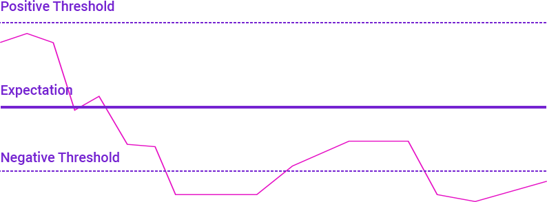 -
Problem Statements
Customers need better set expectations of the type of food, atmosphere and service of a restaurant because mismanaged expectations may have negative results for everyone involved.
Servers need to better understand customer expectations because it is difficult to meet or exceed various types of expectations.
-
How might we manage customers’ expectations better?
I began brainstorming solutions around this problem of customer expectations. While the challenge of getting the customer to rate their experience at all was interesting, I was more interested in the possibility of setting their expectations before they even walked in the door.
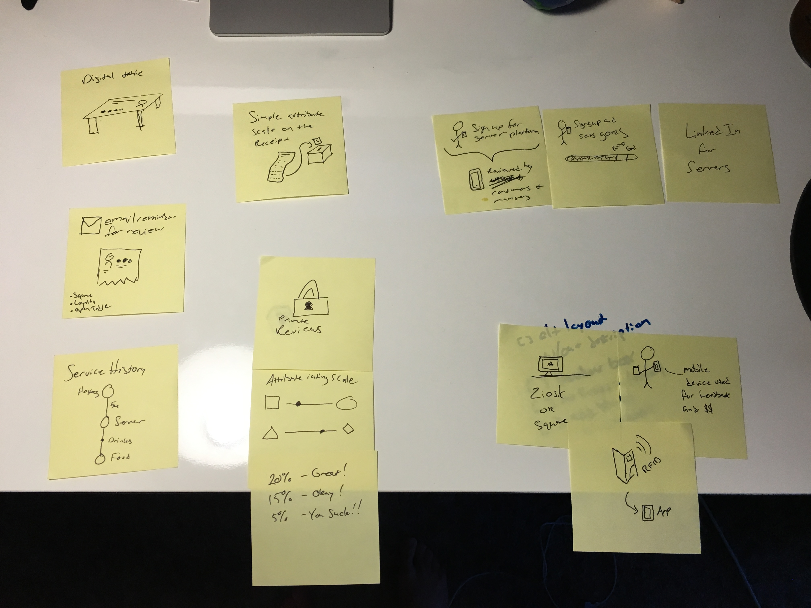 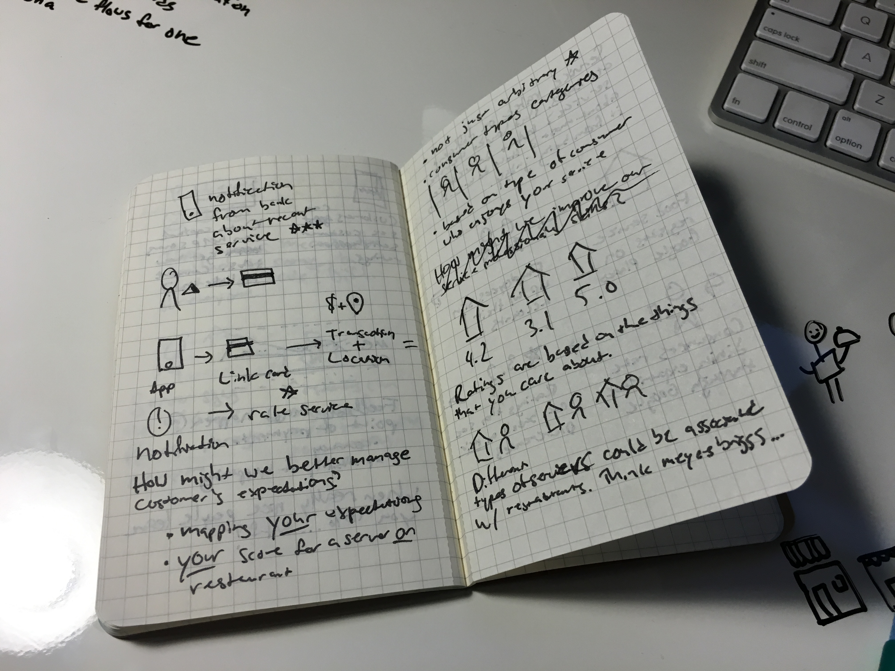I like to draw simple stories as I iterate through a concept. After, I created more detailed storyboards from both the server and the customer’s perspective to demonstrate and evaluate my idea with others.

 Google Reviews - Customer Storyboard
Google Reviews - Customer StoryboardA customer signs up for Google Reviews and sets their cuisine and service preferences into their profile.
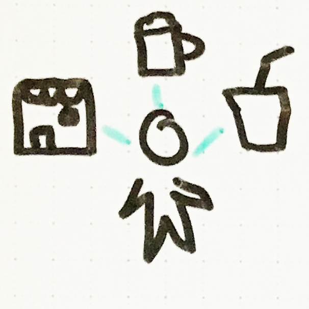Later on they find a place to eat with Google Maps and get directions.
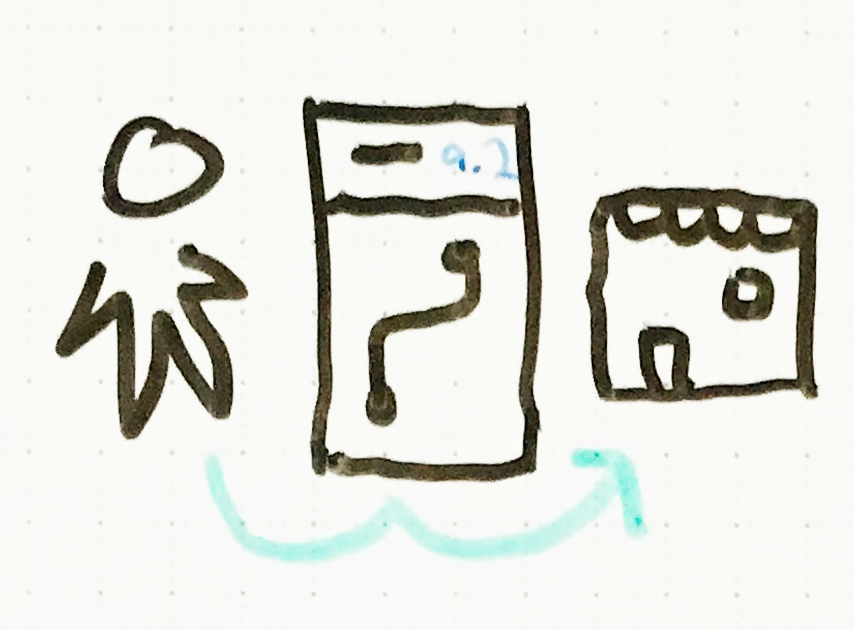At the end of their meal there server reminds them to leave a rating on Google Reviews. There is also a reminder on the receipt that was left at their table.
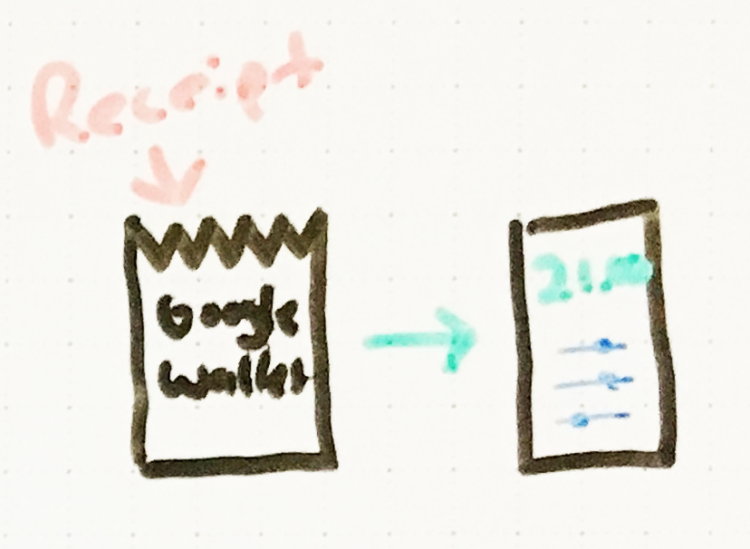Customers open the app and rate their service based on a set criterea.
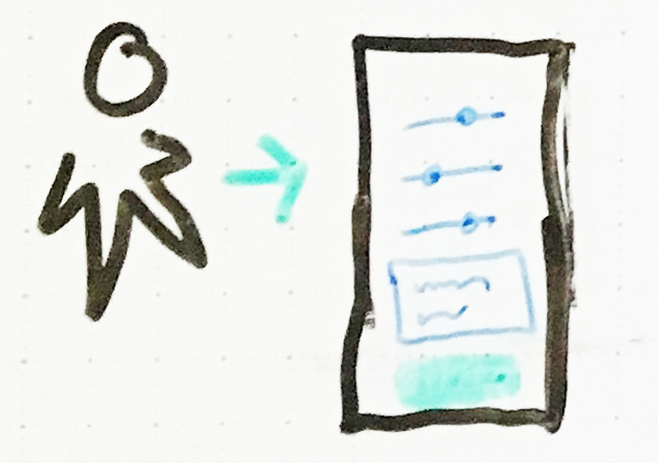Customer feedback is then sent to the venue, their server and their own preferences profile.
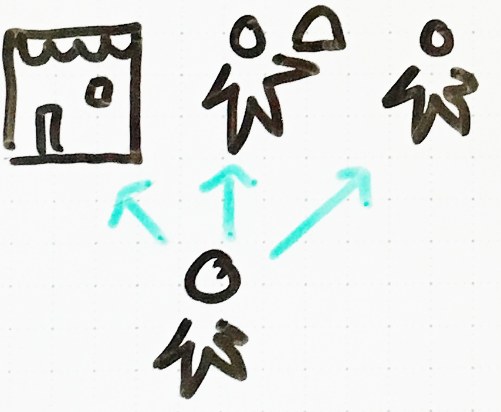The next time the customer uses Google Maps they notice that their are two ratings for a given location. The average ratings of customers and a personalized rating based on their prefernces.
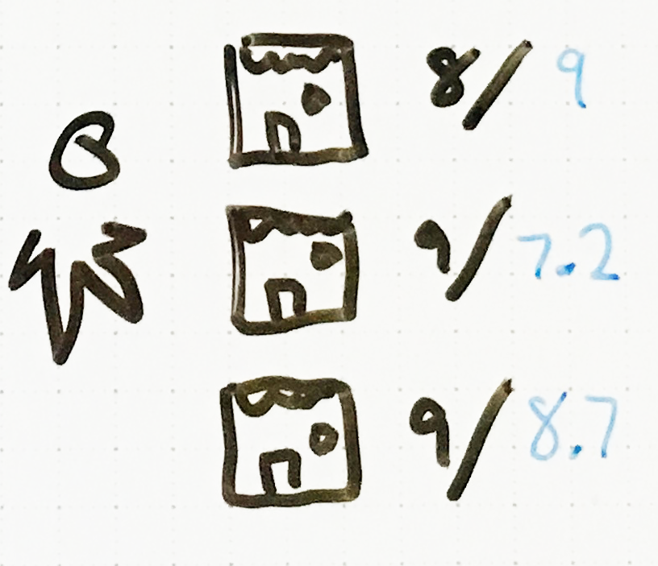WireframesAfter collecting feedback I took my storyboards and created low fidelity wireframes for the primary use case of submitting feedback to a server.
 Visual Design
Visual DesignI utilized the Google Material Design system (and helpful Sketch template) to illustrate my concept into high fidelity designs.
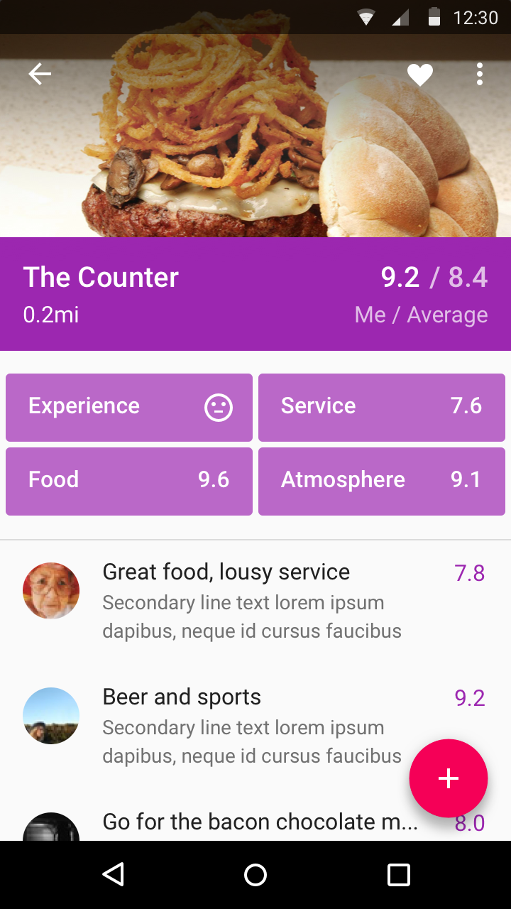 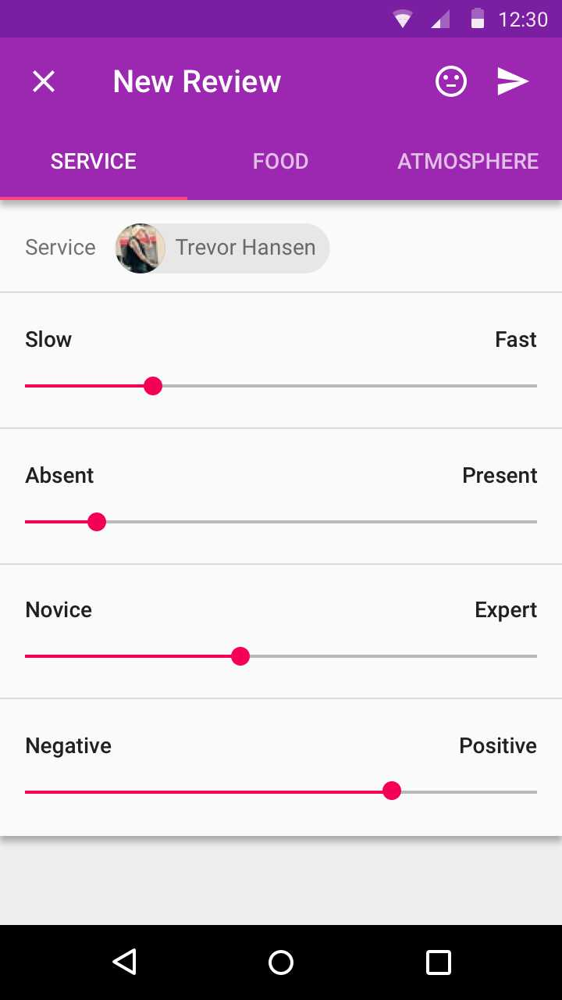Are you done yet?Not quite. These are the next steps I would take in evaluating this concept:
- Collect more feedback on the chosen concept and create learning objectives and assumptions for further testing.
-
Test low fidelity solutions (MVPs) with end users based on those learning objectives.
- Are we using the right attributes to test a service experience? Can we add these attributes to the bottom of receipts at a restaurant, collect and present feedback to servers and their managers?
- Identify and prioritize pain points and use cases to inform a product roadmap and implementation plan.
- Dive into detailed user flows and wireframes to create an interaction model and find exceptions.